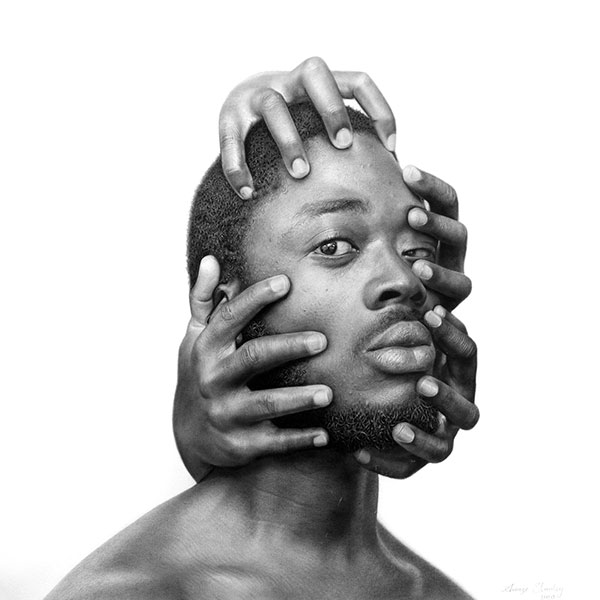
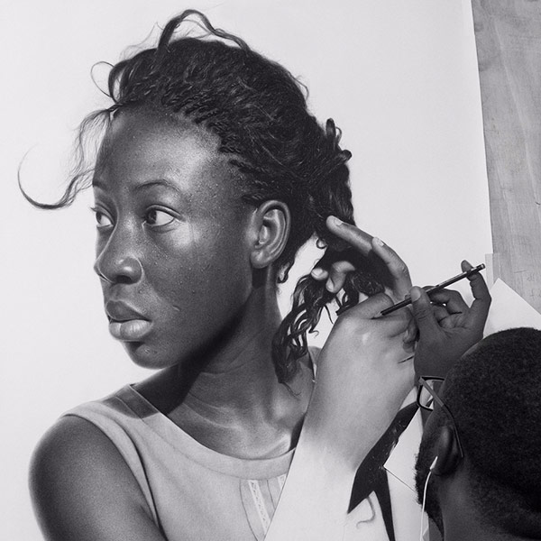

Arinze Stanley Egbengwu is a Nigerian artist, activist, photographer, engineer, and entrepreneur. He is best known for creating hyperrealistic pencil drawings. Working primarily with charcoal and graphite on paper, Arinze uses his works as a medium for social and political activism.